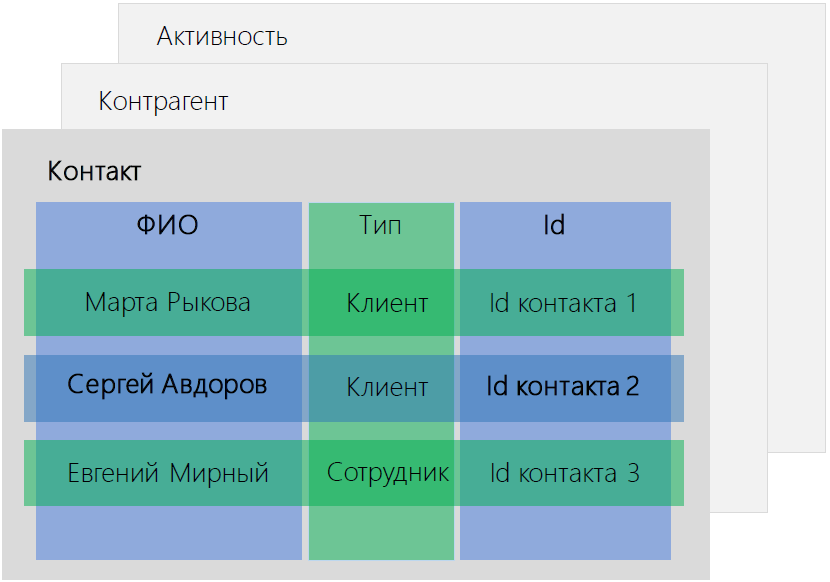

Бизнес-процессы в bpm'online взаимодействуют с записями системы, которые называют данными. При выполнении бизнес-процесса с данными могут работать пользователи, а такжеданные могут обрабатываться в фоновом режиме без участия пользователя.
В этой статье описаны принципы работы бизнес-процессов с данными — записями раздела, детали или справочника bpm’online.
Когда и зачем нужно работать с данными
Любая практическая задача в bpm'online предусматривает работу с записями разделов, деталей или справочников — это данные. Чтобы автоматизировать задачи, все бизнес-процессы в bpm'online так или иначе должны взаимодействовать с данными.
Ниже описаны наиболее типичные случаи, когда бизнес-процесс работает с данными:
| Бизнес-задача | Задача в bpm’online | Задача процесса |
| Запланировать встречу с клиентом. | Создать новую запись в разделе [Активности]. | Добавить данные |
| Установить сумму продажи в соответствии с бюджетом продажи. | Получить значение поля [Бюджет] на странице определенной записи раздела [Продажи]. | Читать данные |
| Изменить значение поля [Сумма продажи] этой же записи. | Изменить данные | |
| Очистить расписание сотрудника на следующую неделю | В разделе [Активности] удалить записи с определенными значениями в полях [Ответственный] и [Начало]. | Удалить данные |
Пример
В bpm'online marketplace доступны бесплатные темплейты бизнес-процессов, иллюстрирующие работу с данными в bpm’online в ходе процесса. Для загрузки темплейта перейдите по ссылке.
После установки темплейта marketplace в разделе [Библиотека процессов] появится новая папка "Academy examples". В ней содержатся 4 процесса: “Read data process element”, “Modify data process element”, “Delete data process element” и “Add data process element”. В каждом из этих процессов приведено несколько примеров использования параметров.
Во всех перечисленных случаях бизнес-процесс должен получить определенные данные и затем выполнить определенные изменения в базе данных bpm’online.
Работая с данными, бизнес-процесс может получать их напрямую из базы данных или использовать данные, сгенерированные на предыдущих шагах процесса. Полученные таким образом данные могут быть указаны в процессе как значения параметров., которые процесс может использовать в любое время.
Работа с данными сводится к четырем основным операциям: создание, чтение, изменение и удаление. В следующей главе рассмотрим, как эти операции выполняются в рамках бихнес-процессов bpm’online.
Операции с данными
На уровне базы данных управление данными сводится к четырем базовым операциям: создание, чтение, изменение и удаление записей. Большинство элементов бизнес-процессов выполняют эти операции автоматически:
-
Элементы [Выполнить задачу] и [Отправить письмо] создают новые записи.
-
При выполнении элементов [Открыть страницу редактирования], [Преднастроенная страница] и [Визирование] могут быть созданы новые записи или изменены существующие.
-
Начальное событие [Сигнал] и промежуточное [Ожидание сигнала] выполняют чтение записей.
Кроме того, в bpm'online есть четыре элемента бизнес-процесса, которые специально предназначены для выполнения операций с данными. Обычно специальные элементы по работе с данными используются в таких случаях:
-
Элемент [Читать данные] используется, когда для выполнения шагов процесса нужны данные, недоступные в процессе. Этот элемент получает информацию напрямую из базы данных.
-
Элементы [Добавить данные], [Изменить данные] и [Удалить данные] используются, если вам необходимо создать, изменить или удалить из bpm'online записи в фоновом режиме, без открытия каких-либо страниц или создания задач для пользователя.
Независимо от варианта использования, настройка специальных элементов по работе с данными включает несколько типичных шагов.
Чтение данных
-
Определите объект, с которым будет работать процесс. Затем узнайте, в каких колонках содержатся значения, которые надо вычитать.
-
Определите запись, из которой нужно вычитать данные.
Добавление данных
-
Определите объект для добавления в него записей, а также поля новой записи, которые будут заполнены данными.
-
Определите данные, которыми будут заполнены поля новой записи. Это могут быть статические значения или значения, полученные из других параметров процесса.
Изменение данных
-
Определите объект, в котором содержится требующая изменений запись. Затем узнайте, в каких полях содержатся значения, которые надо изменить.
-
Определите запись, которую необходимо изменить.
-
Определите данные, которыми будут заполнены поля записи. Это могут быть статические значения или значения, полученные из других параметров процесса.
Удаление данных
-
Определите объект, из которого необходимо удалить записи.
-
Определите запись, которую необходимо удалить.
Как видно, использование базовых операций при выполнении процессов bpm’online сводится к следующим шагам: определение объекта и колонки, с которыми будет работать процесс, а также определение записи и новых данных.
Определение объектов и полей
Для каждой связанной с данными операции требуется идентифицировать объект bpm’online, в котором содержатся необходимые данные. Вдобавок, для выполнения всех операций (кроме операции “Удаление данных”) необходимо указать поля, значения которых необходимо вычитать, добавить или изменить. Например:
-
При планировании встречи с клиентом в bpm’online необходимо добавить новую запись в объект “Активность” и заполнить поля [Заголовок], [Начало], [Завершение], а также [Контакт] и/или [Контрагент].
-
Чтобы в продаже указать такую же сумму, как и ее бюджет, необходимо:
a.Вычитать значение поля [Бюджет клиента] определенной записи раздела [Продажи] (объект “Продажа”).
b.Изменить значение поля [Сумма продажи] той же записи в том же объекте, заменив его значением, полученным из поля [Бюджет].
-
Чтобы очистить расписание сотрудника на следующую неделю, необходимо удалить определенные записи объекта “Активность”.
Все данные bpm’online хранятся в виде значений полей записей из разных объектов (Рис. 74):
Рис. 74 — Структура данных bpm’online: “Объекты, записи и колонки”
Для использования данных bpm’online в вашем бизнес-процессе вам необходимо определить объект, запись и поля:
-
Объект (раздел, деталь или справочник). Объекты в bpm’online примерно соответствуют таблицам базы данных. Например, объект “Контрагент” содержит все контрагенты, а объект “Активность” содержит все активности.
-
Объект колонки (или “поля”). Колонки объекта в bpm’online соответствуют колонкам таблицы базы данных. Например, колонка “Название” содержит названия контрагентов, а колонка “Дата создания” — даты, когда эти контрагенты были созданы.
-
Запись (элемент объекта). Записи в bpm’online соответствуют строкам в таблице базы данных. Например, записью — это определенный контрагент, контакт или активность.
Определение необходимых записей
При поиске конкретных данных необходимые объект и колонки обычно известны, посколькупользователь понимает. Например, “Мне нужно найти имя определенного контакта”. Главная задача — определить необходимую запись (в данном примере — конкретный контакт).
Существует два способа выбора записей:
-
Использовать логическое условие — фильтр. Например, вы можете отфильтровать все записи объекта Активность, у которых в поле [Состояние] установлено “Отменена”.
-
Использовать идентификатор записи, который может быть получен из параметра процесса или элемента.
Определение конкретной записи
Идентификатор записи — это уникальное значение, которое однозначно определяет запись в базе данных bpm'online. Идентификатор записи хранится в колонке [Id], которая доступна во всех объектах bpm'online (Рис. 75). Работая с бизнес-процессом, получить идентификатор записи можно из параметров процесса или элемента.
Параметры процесса — это особые свойства процесса, в которых хранятся данные, используемые для выполнения процесса и его элементов, а также данные, которые являются результатом выполнения процесса. Подробнее >>>
Рис. 75 — Схематическое изображение колонки “Id” в объекте “Contact”

Идентификатор записи можно получить такими способами:
-
Из параметра процесса. Как правило, такие параметры доступны в процессах, которые используются в качестве подпроцессов, а также в процессах, которые запускаются вручную по выбранной записи.
-
Из сигнального элемента объекта — начального события [Сигнал] или промежуточного [Обработка сигнала], которые активируются изменениями в записях bpm’online. Подробнее >>>
-
Из исходящего параметра элемента процесса, который работал с необходимой записью.
Перечисленные ниже элементы процесса работают с данными автоматически. В их исходящих параметрах хранятся значения полей записей bpm'online.
-
[Выполнить задачу] — значения полей активности, включая идентификатор записи.
-
[Открыть страницу редактирования] — значения полей соответствующей записи (записи, страница которой открывается при выполнении этого элемента).
-
[Преднастроенная страница] — если указан объект, который является источником данных, то элемент содержит параметры для всех колонок объекта.
-
[Отправить email] — значения полей email (“От кого”, “Кому”, идентификаторы связанных записей и т. д.).
-
[Сигнал] — для сигналов объекта — идентификатор записи, которая послужила триггером сигнала.
-
[Обработка сигнала] — для сигналов записи — идентификатор записи, которая послужила триггером сигнала.
-
[Подпроцесс] — любые исходящие параметры бизнес-процесса, указанные в подпроцессе.
Необходимую запись можно определить по Id, полученному из параметров процесса и элементов, если соблюдено любое из следующих условий:
-
Начальным элементом процесса является [Сигнал] в режиме “Получен сигнал от объекта” (процесс стартует автоматически, по факту изменения данных в определенном объекте bpm’online).
-
Процесс запускается по необходимой записи: вручную, со страницы записи, или как часть динамического кейса.
-
Предыдущие элементы процесса уже работали с этой записью, а в ходе процесса вам необходимо работать с той же записью многократно.
Если Id необходимой записи есть в параметре процесса или элемента, то можно выполнить маппинг параметра (сопоставление параметра процесса или элемента с нужным полем в bpm’online). Маппинг выполняется в области фильтрации на панели настройки свойств элементов [Читать данные], [Изменить данные] или [Удалить данные] (Рис. 76). По сути вам необходимо настроить фильтр по колонке [Id] и выбрать команду “Сравнить с параметром” в меню при указании значения колонки.
Рис. 76 — Настройка фильтрации по Id записи
В открывшемся окне (Рис. 77) выберите процесс или элемент, который содержит параметр с необходимым значением Id.
Рис. 77 — Выбор параметра процесса, в котором содержится Id необходимой записи
В результате фильтр всегда будет отбирать одну запись, поскольку две записи не могут иметь одинаковые идентификаторы в базе данных bpm’online.
Подробнее маппинг параметров описан в статье “Как установить значение параметра из другого элемента”.
Определение набора записей по условиям
Как правило, чтобы указать, с какими записями должен работать процесс, используются обычные условия фильтрации, если:
-
Элемент должен работать с выборкой записей: вычитать коллекцию записей, изменить или удалить все записи, которые соответствуют условию .
-
Элемент должен работать с единственной записью, которая соответствует условию выбора (“первая запись в выборке”).
Для выбора записей по условию нужно выполнить фильтрацию по необходимым колонкам, используя стандартный модуль фильтрации bpm’online и учитывая правила сортировки записей (Рис. 78).
Рис. 78 — Пример отбора записей по условию
Например, вы можете выбрать последний завершенный звонок, отфильтровав активности по значениям полей [Тип] и [Состояние], а затем отсортировав результирующую выборку записей по убыванию.
Подробнее работа с фильтрами описана в статье “Фильтры”.
Определение новых данных для заполнения полей записей, которые добавляются или изменяются в ходе процесса
После выполнения необходимых операций с данными, элементы процесса передают эти данные в свои исходящие параметры. Так данные можно будет использовать на следующих шагах процесса. Например, после создания активности с помощью элемента [Выполнить задачу], Id такой активности наряду с другими данными передается в исходящие параметры (Рис. 79). Используя эти параметры, вы можете обращаться к этой же активности позже в ходе процесса.
Рис. 79 — Параметры элемента [Выполнить задачу], содержащие данные активности
Параметры совпадают с названиями и типом соответствующих полей в bpm’online. Например, название должности контакта содержится в текстовом поле типа “Cтрока” и передается в параметр типа “Текст”. В то же время дата завершения активности содержится в поле типа “Дата/Время” и передается в параметр такого же типа.
Элементы процесса для работы с данными и примеры их использования
Ниже приведены четыре элемента процесса, специально предназначенные для работы с данными. Каждый элемент используется для выполнения определенной операции.
|
| Вычитывает данные из базы данных для дальнейшего использования в бизнес-процессе. Полученные данные хранятся в исходящих параметрах элемента [Читать данные]. Примеры использования:
|
|
| Создает в определенном разделе или справочнике bpm’online новые записи c определенными значениями в указанных полях. Примеры использования: |
|
| Изменяет значения указанных полей в записи определенного раздела или справочника. Примеры использования: |
|
| Автоматически удаляет записи из определенного объекта. Примеры использования: |


Смотрите также